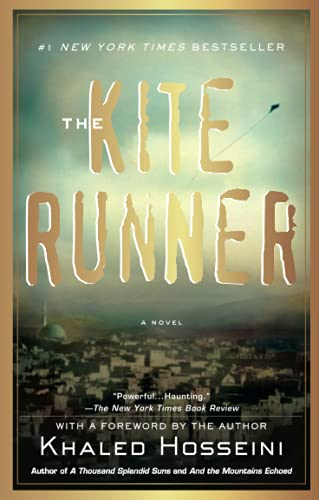

The Kite Runner

Khalel Hosaeini
Khaled Hosseini (/ˈhɑːlɛd hoʊˈseɪni/; Persian: خالد حسینی [ˈxɒled hoˈsejni]; born 4 March 1965) is an Afghan-American novelist and UNHCR goodwill ambassador.[1][2] His debut novel The Kite Runner (2003) was a critical and commercial success; the book, as well as his subsequent novels, have all been at least partially set in Afghanistan and have featured an Afghan as the protagonist.
Born in Kabul, Afghanistan, to a diplomat father, Hosseini spent some time living in Iran and France. When Hosseini was 15, his family applied for asylum in the United States, where he later became a naturalized citizen. Hosseini did not return to Afghanistan until 2003[3] when he was 38, an experience similar to that of the protagonist in The Kite Runner. In later interviews, Hosseini admitted to feeling survivor's guilt for having been able to leave the country prior to the Soviet invasion and subsequent wars.
The God Of Small Things

Arundhati Roy
Arundhati Roy was born in Shillong, Meghalaya, India,[7] to Mary Roy, a Malayali Syrian Christian women's rights activist from Kerala and Rajib Roy, a Bengali Hindu tea plantation manager from Calcutta.[8] When she was two, her parents divorced and she returned to Kerala with her mother and brother.[8] For some time, the family lived with Roy's maternal grandfather in Ooty, Tamil Nadu. When she was five, the family moved back to Kerala, where her mother started a school.[8]
Roy attended school at Corpus Christi, Kottayam, followed by the Lawrence School, Lovedale, in Nilgiris, Tamil Nadu. She then studied architecture at the School of Planning and Architecture, Delhi, where she met architect Gerard da Cunha. They married in 1978 and lived together in Delhi, and then Goa, before they separated and divorced in 1982
The Alchemist

Paulo Coelho
The Alchemist by Paulo Coelho continues to change the lives of its readers forever. With more than two million copies sold around the world, The Alchemist has established itself as a modern classic, universally admired.
Paulo Coelho's masterpiece tells the magical story of Santiago, an Andalusian shepherd boy who yearns to travel in search of a worldly treasure as extravagant as any ever found.